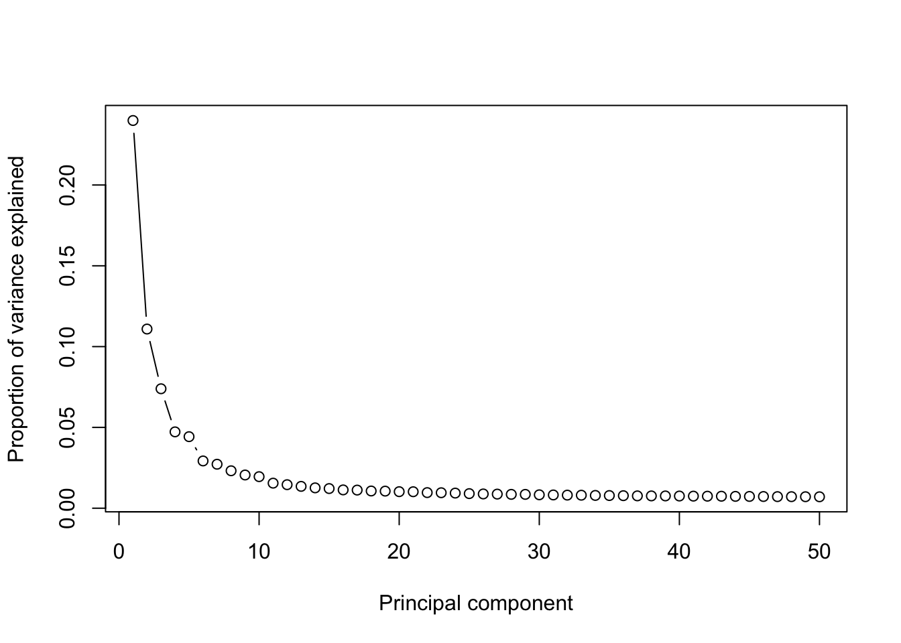
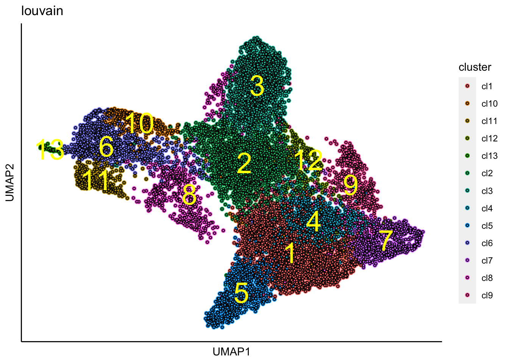
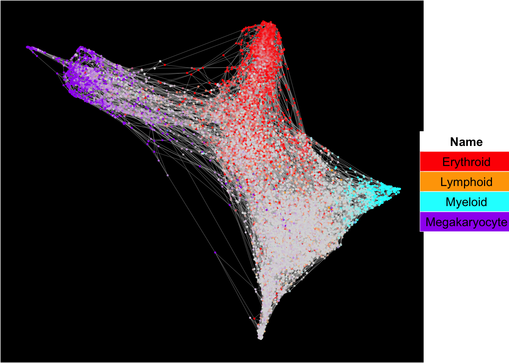
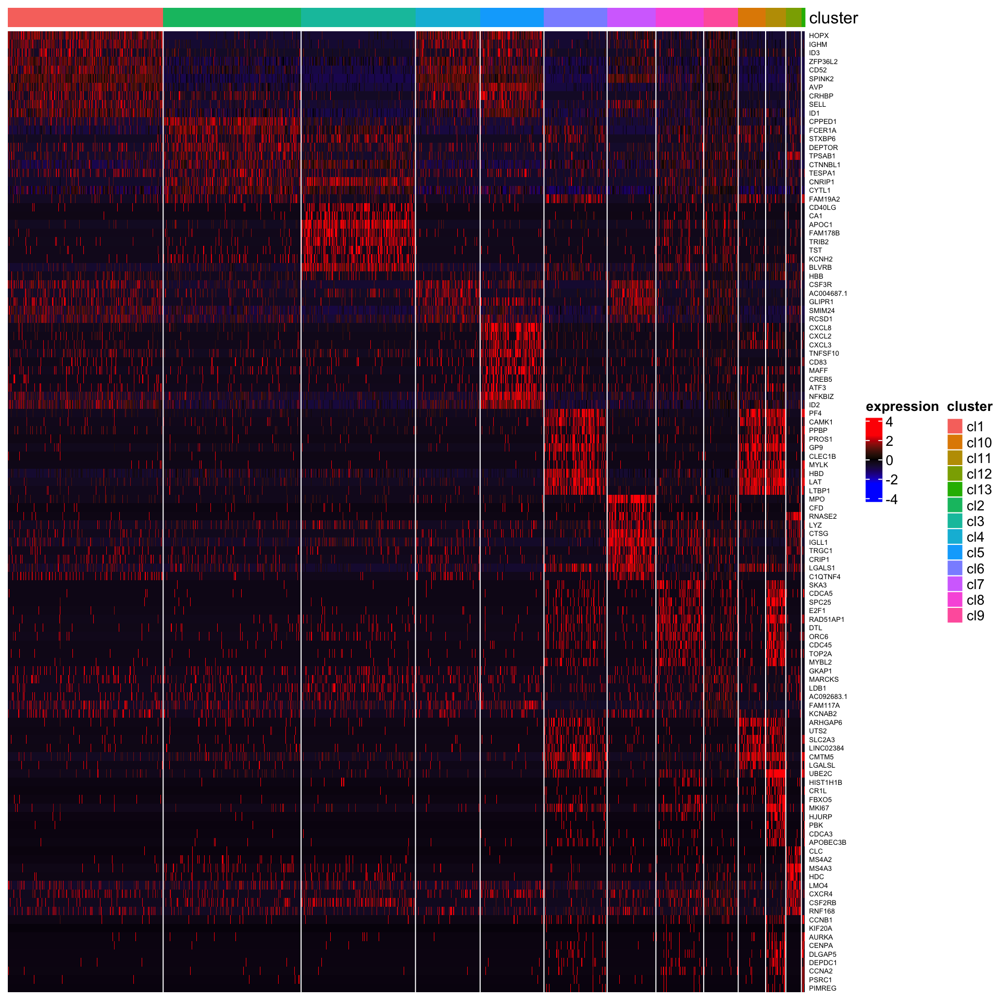

SingCellaR analysis workflow for 10x genomics platform
Standard analysis workflow for a myelofibrosis patient (Sample20) generated by Psaila et al., Mol. Cell, 2020
library(SingCellaR)
data_matrices_dir<-"../SingCellaR_example_data_sets/Psaila_et_al/Sample20_cellranger/"
Sample20<-new("SingCellaR")
Sample20@dir_path_10x_matrix<-data_matrices_dir
Sample20@sample_uniq_id<-"Sample20"
load_matrices_from_cellranger(Sample20,cellranger.version = 3)## [1] "The sparse matrix is created."Sample20## An object of class SingCellaR with a matrix of : 33538 genes across 11227 samples.Next, cell information will be processed. The input “mitochondiral_genes_start_with” is the important parameter. The percentage of mitocondrial per cell will be calculated. For human, mitocondrial gene names start with “MT-”.
process_cells_annotation(Sample20,mitochondiral_genes_start_with="MT-")## [1] "List of mitochondrial genes:"
## [1] "MT-ND1" "MT-ND2" "MT-CO1" "MT-CO2" "MT-ATP8" "MT-ATP6" "MT-CO3"
## [8] "MT-ND3" "MT-ND4L" "MT-ND4" "MT-ND5" "MT-ND6" "MT-CYB"
## [1] "The meta data is processed."QC plots
Histogram
plot_cells_annotation(Sample20,type="histogram")Boxplot
plot_cells_annotation(Sample20,type="boxplot")UMIs vs. the number of detected genes/cell
plot_UMIs_vs_Detected_genes(Sample20)- min_UMIs=1000
- max_UMIs=30000
- min_detected_genes=500
- max_detected_genes=5000
- max_percent_mito=15
- genes_with_expressing_cells=10
Filtering
filter_cells_and_genes(Sample20,
min_UMIs=1000,
max_UMIs=30000,
min_detected_genes=500,
max_detected_genes=5000,
max_percent_mito=15,
genes_with_expressing_cells = 10)## [1] "The cells and genes metadata are updated by adding the filtering status."
## [1] "430/11227 cells will be filtered out from the downstream analyses!."Normalisation
normalize_UMIs(Sample20,use.scaled.factor = T)## [1] "Normalization is completed!."Regressing out unwanted source of variations
Next, the effect of the library size and the percentage of mitocondrial reads are regressed out.
remove_unwanted_confounders(Sample20,residualModelFormulaStr="~UMI_count+percent_mito")##
|
| | 0%
|
|==== | 6%
|
|======== | 12%
|
|============ | 18%
|
|================ | 24%
|
|===================== | 29%
|
|========================= | 35%
|
|============================= | 41%
|
|================================= | 47%
|
|===================================== | 53%
|
|========================================= | 59%
|
|============================================= | 65%
|
|================================================= | 71%
|
|====================================================== | 76%
|
|========================================================== | 82%
|
|============================================================== | 88%
|
|================================================================== | 94%
|
|======================================================================| 100%
## [1] "Removing unwanted sources of variation is done!"Highly variable genes identification
get_variable_genes_by_fitting_GLM_model(Sample20,mean_expr_cutoff = 0.05,disp_zscore_cutoff = 0.05)## [1] "Calculate row variance.."
##
|
| | 0%
|
|========= | 12%
|
|================== | 25%
|
|========================== | 38%
|
|=================================== | 50%
|
|============================================ | 62%
|
|==================================================== | 75%
|
|============================================================= | 88%
|
|======================================================================| 100%[1] "Using :12589 genes for fitting the GLM model!"
## [1] "Identified :1740 variable genes"House keeping (e.g. ribosomal genes) and mitocondrial genes should be removed from the highly variable gene sets. SingCellaR reads in the GMT file that contains the ribosomal and mitocondrial genes and removes these genes from the list of highly variable genes. Below is an example to remove genes.
remove_unwanted_genes_from_variable_gene_set(Sample20,gmt.file = "../SingCellaR_example_data_sets/Human_gene_sets/human.ribosomal-mitocondrial.genes.gmt",
removed_gene_sets=c("Ribosomal_gene","Mitocondrial_gene"))## [1] "3 genes are removed from the variable gene set."Here, the plot shows highly variable genes in the fitted GLM model.
plot_variable_genes(Sample20)## [1] "Calculate row variance.."
##
|
| | 0%
|
|========= | 12%
|
|================== | 25%
|
|========================== | 38%
|
|=================================== | 50%
|
|============================================ | 62%
|
|==================================================== | 75%
|
|============================================================= | 88%
|
|======================================================================| 100%PCA anlysis
Top 50 PCs will be calculated using irlba method from https://github.com/bwlewis/irlba The parameter “use.regressout.data” is critical. If TRUE, PCA uses the regressout data. If FALSE, PCA uses the normalized data without removing any umwanted source of variations.
runPCA(Sample20,use.components=50,use.regressout.data = T)## [1] "PCA analysis is done!."Next, the number of PCs used for the donwstream analysis will be determined from a scree plot.
plot_PCA_Elbowplot(Sample20)
UMAP analysis
runUMAP(Sample20,dim_reduction_method = "pca",n.dims.use = 20,n.neighbors = 30,
uwot.metric = "euclidean")## 23:45:55 UMAP embedding parameters a = 1.121 b = 1.057## 23:45:55 Read 10797 rows and found 20 numeric columns## 23:45:55 Using Annoy for neighbor search, n_neighbors = 30## 23:45:55 Building Annoy index with metric = euclidean, n_trees = 50## 0% 10 20 30 40 50 60 70 80 90 100%## [----|----|----|----|----|----|----|----|----|----|## **************************************************|
## 23:45:56 Writing NN index file to temp file /var/folders/c6/_w309xr54n7cphf9nw4x_ms40000gn/T//RtmpLtkyRE/file18f4247e478
## 23:45:56 Searching Annoy index using 8 threads, search_k = 3000
## 23:45:56 Annoy recall = 100%
## 23:45:57 Commencing smooth kNN distance calibration using 8 threads
## 23:45:57 Initializing from normalized Laplacian + noise
## 23:45:57 Commencing optimization for 200 epochs, with 468304 positive edges
## 23:46:03 Optimization finished## [1] "UMAP analysis is done!."plot_umap_label_by_a_feature_of_interest(Sample20,feature = "UMI_count",point.size = 0.1)Cluster identification
We further identify clusters using the following function.
identifyClusters(Sample20,n.dims.use = 30,n.neighbors = 30,knn.metric = "euclidean")## [1] "Building Annoy index with metric = euclidean , n_trees = 50"## 0% 10 20 30 40 50 60 70 80 90 100%## [----|----|----|----|----|----|----|----|----|----|## **************************************************|## [1] "Searching Annoy index, search_k = 3000"## 0% 10 20 30 40 50 60 70 80 90 100%
## [----|----|----|----|----|----|----|----|----|----|
## **************************************************|## [1] "Building graph network.."
## [1] "Building graph network is done."
## [1] "Process community detection.."
## [1] "Louvain analysis is done!."Identify clusters are then superimposed on top of the UMAP.
plot_umap_label_by_clusters(Sample20,show_method = "louvain",point.size = 0.80)
Force-directed graph analysis
SingCellaR incorporates force-directed graph for the visualization of differentiation trajectories.
runFA2_ForceDirectedGraph(Sample20,n.dims.use = 20,
n.neighbors = 5,n.seed = 1,fa2_n_iter = 1000)## [1] "Building Annoy index with metric = euclidean , n_trees = 50"## 0% 10 20 30 40 50 60 70 80 90 100%## [----|----|----|----|----|----|----|----|----|----|## **************************************************|## [1] "Searching Annoy index, search_k = 500"## 0% 10 20 30 40 50 60 70 80 90 100%
## [----|----|----|----|----|----|----|----|----|----|
## **************************************************|## [1] "Processing fa2.."
## [1] "Force directed graph analysis is done!."Force-directed graph is then plotted with identified clusters.
plot_forceDirectedGraph_label_by_clusters(Sample20,show_method = "louvain",vertex.size = 0.85,
background.color = "black")
The superimpose of signature gene scores
SingCellaR can superimpose signature gene scores from different gene sets on top of the embeddings.
The plot below is the superimposed gene scores from erythorid, myeloid, lymphoid, and megakaryocyte gene sets on top UMAP and force-directed graph respectively.
plot_umap_label_by_multiple_gene_sets(Sample20,gmt.file = "../SingCellaR_example_data_sets/Human_gene_sets/human.signature.genes.v1.gmt",
show_gene_sets = c("Erythroid","Lymphoid","Myeloid","Megakaryocyte"),
custom_color = c("red","orange","cyan","purple"),
isNormalizedByHouseKeeping = T,point.size = 1,background.color = "black")plot_forceDirectedGraph_label_by_multiple_gene_sets(Sample20,gmt.file = "../SingCellaR_example_data_sets/Human_gene_sets/human.signature.genes.v1.gmt",
show_gene_sets = c("Erythroid","Lymphoid","Myeloid","Megakaryocyte"),
custom_color = c("red","orange","cyan","purple"),
isNormalizedByHouseKeeping = T,vertex.size = 1,edge.size = 0.1,
background.color = "black")
Marker genes identification
Next, we perform differential gene expression analysis across cluster to identify marker genes that are specifically express in each particular cluster.
*This step is critical for the preparation for the “supervised harmony” integration. Supervised harmony requires differentially expressed genes across identified clusters per each sample.
findMarkerGenes(Sample20,cluster.type = "louvain")## [1] "Number of genes for analysis: 15920"
## [1] "Creating binary matrix.."
## [1] "Finding differential genes.."
## [1] "Identifying marker genes for: cl1"
## [1] "Processing Fisher's exact test!"
## [1] "Processing Wilcoxon Rank-sum test!"
## [1] "Combining p-values using the fisher's method!"
## [1] "Identifying marker genes for: cl2"
## [1] "Processing Fisher's exact test!"
## [1] "Processing Wilcoxon Rank-sum test!"
## [1] "Combining p-values using the fisher's method!"
## [1] "Identifying marker genes for: cl3"
## [1] "Processing Fisher's exact test!"
## [1] "Processing Wilcoxon Rank-sum test!"
## [1] "Combining p-values using the fisher's method!"
## [1] "Identifying marker genes for: cl4"
## [1] "Processing Fisher's exact test!"
## [1] "Processing Wilcoxon Rank-sum test!"
## [1] "Combining p-values using the fisher's method!"
## [1] "Identifying marker genes for: cl5"
## [1] "Processing Fisher's exact test!"
## [1] "Processing Wilcoxon Rank-sum test!"
## [1] "Combining p-values using the fisher's method!"
## [1] "Identifying marker genes for: cl6"
## [1] "Processing Fisher's exact test!"
## [1] "Processing Wilcoxon Rank-sum test!"
## [1] "Combining p-values using the fisher's method!"
## [1] "Identifying marker genes for: cl7"
## [1] "Processing Fisher's exact test!"
## [1] "Processing Wilcoxon Rank-sum test!"
## [1] "Combining p-values using the fisher's method!"
## [1] "Identifying marker genes for: cl8"
## [1] "Processing Fisher's exact test!"
## [1] "Processing Wilcoxon Rank-sum test!"
## [1] "Combining p-values using the fisher's method!"
## [1] "Identifying marker genes for: cl9"
## [1] "Processing Fisher's exact test!"
## [1] "Processing Wilcoxon Rank-sum test!"
## [1] "Combining p-values using the fisher's method!"
## [1] "Identifying marker genes for: cl10"
## [1] "Processing Fisher's exact test!"
## [1] "Processing Wilcoxon Rank-sum test!"
## [1] "Combining p-values using the fisher's method!"
## [1] "Identifying marker genes for: cl11"
## [1] "Processing Fisher's exact test!"
## [1] "Processing Wilcoxon Rank-sum test!"
## [1] "Combining p-values using the fisher's method!"
## [1] "Identifying marker genes for: cl12"
## [1] "Processing Fisher's exact test!"
## [1] "Processing Wilcoxon Rank-sum test!"
## [1] "Combining p-values using the fisher's method!"
## [1] "Identifying marker genes for: cl13"
## [1] "Processing Fisher's exact test!"
## [1] "Processing Wilcoxon Rank-sum test!"
## [1] "Combining p-values using the fisher's method!"
## [1] "Identifying marker genes for: cl14"
## [1] "Processing Fisher's exact test!"
## [1] "Processing Wilcoxon Rank-sum test!"
## [1] "Combining p-values using the fisher's method!"The heatmap of top 10 genes
plot_heatmap_for_marker_genes(Sample20,cluster.type = "louvain",n.TopGenes = 10,rowFont.size = 5)
Save SingCellaR object for the integration
Sample20 SingCellaR object will be saved for the integration with other samples.
save(Sample20,file="../SingCellaR_example_data_sets/Psaila_et_al/SingCellaR_objects/Sample20.SingCellaR.rdata")